How to Export & Print Evaluation Sheets
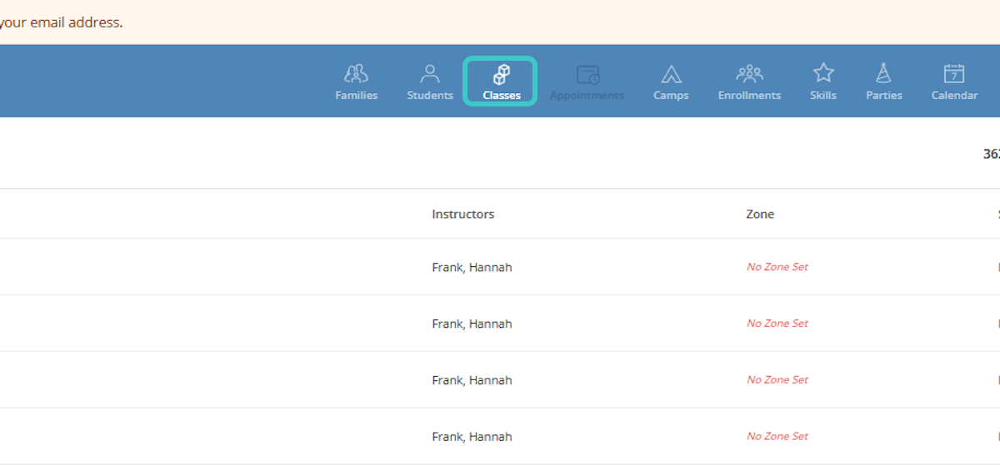
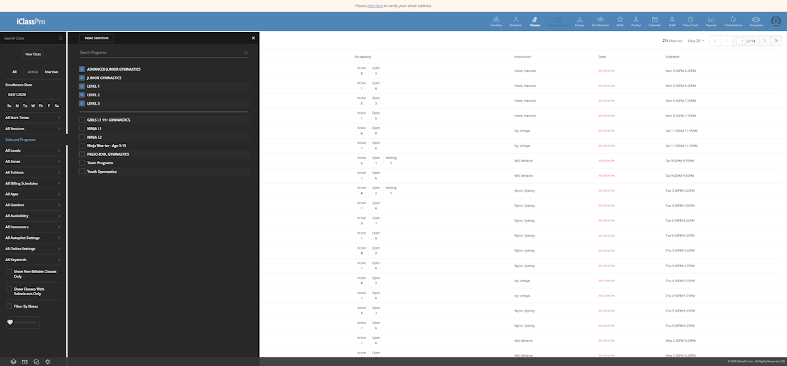
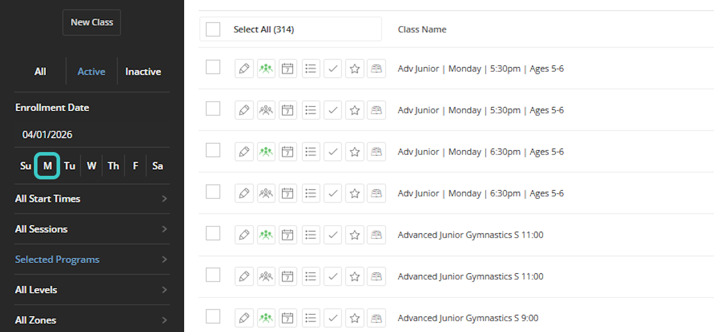
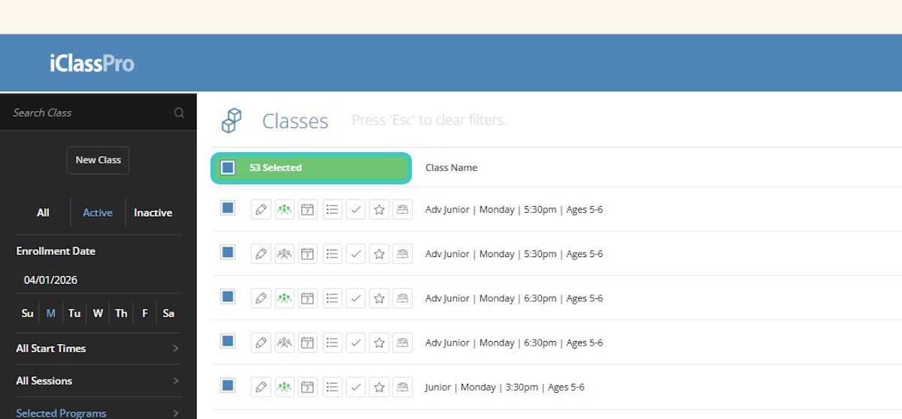
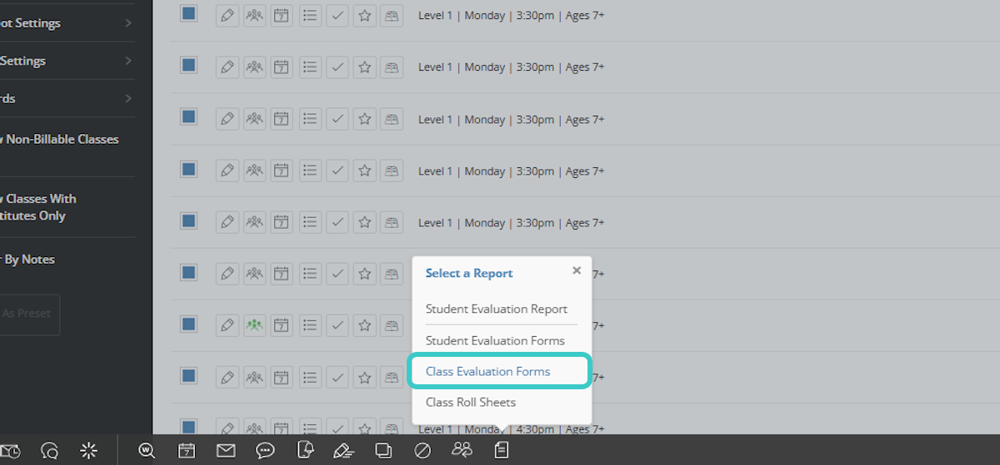
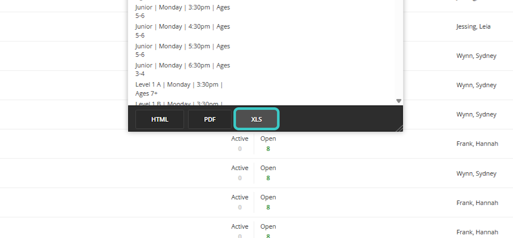
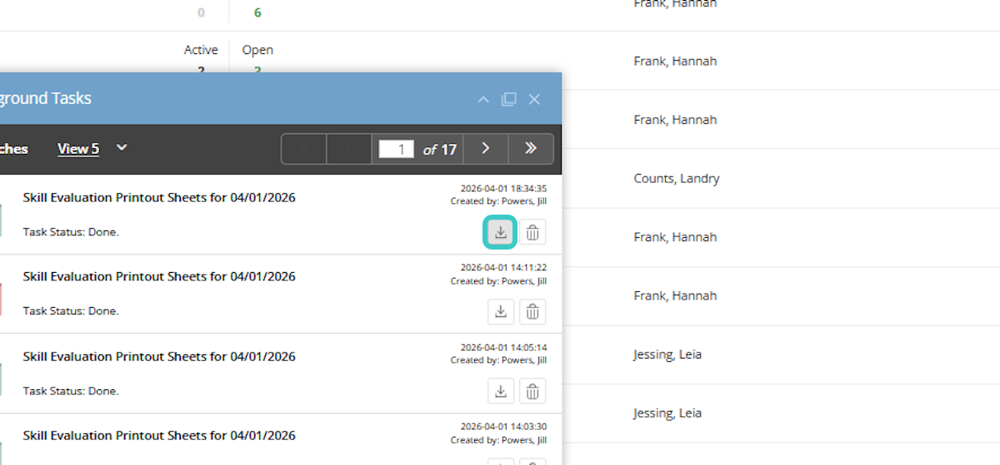
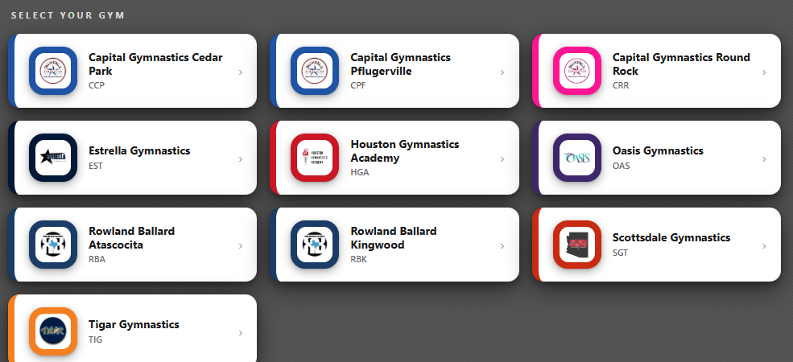
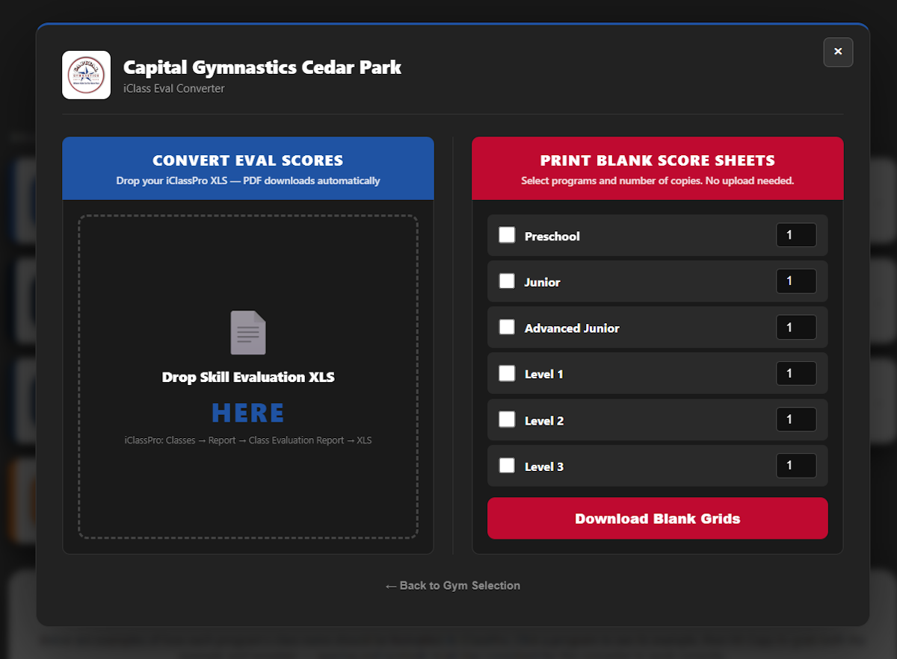
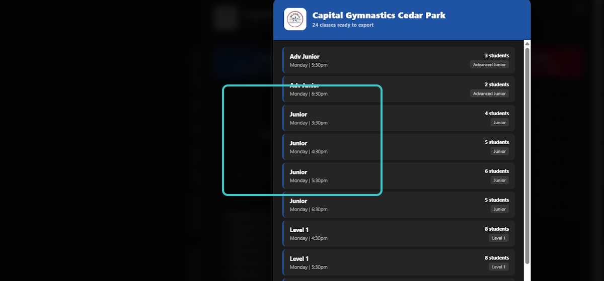
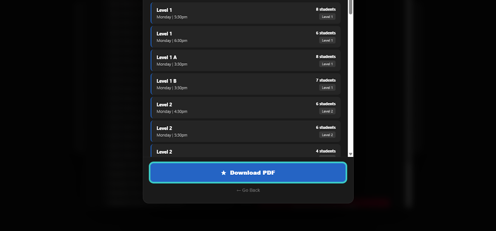
Program | Day | Time | Ages
Preschool | Monday | 3:30pm | Ages 3-4
Program A | Day | Time | Ages
Program B | Day | Time | Ages
Level 1 A | Tuesday | 4:00pm | Ages 7+
Level 1 B | Tuesday | 4:00pm | Ages 7+
| Problem | Solution |
|---|---|
| File won't upload | The file must be in XLS format. If you downloaded a PDF or CSV from iClassPro, go back to Step 4 and make sure you select the XLS option before downloading. |
| Missing pages in the PDF | The class name must contain a recognized program keyword (Preschool, Junior, Advanced Junior, Level 1, Level 2, or Level 3). Classes without a keyword are silently skipped. Check your class names in iClassPro. |
| Wrong class name on the PDF | The PDF pulls the class name directly from iClassPro. Go into iClassPro and update the class name to match the required format: Program | Day | Time | Ages. |
| Class has more pages than expected | If a class is booked over capacity (more than 6 students for Preschool/Junior, or more than 8 for Levels), the tool automatically splits it across two pages and labels them (pg 1/2) and (pg 2/2). This is normal — just print both pages. |